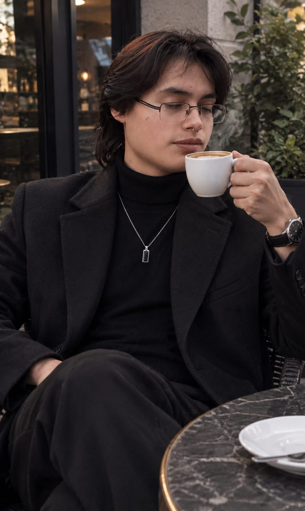

Nuestra filosofía
Pasión por el buen café y las mañanas tranquilas.
Café Tomebamba nació con una idea sencilla: devolverle al café el valor del tiempo bien invertido. Creemos en las charlas pausadas, en el sonido de las cafeteras trabajando y en el aroma que reconforta los días fríos.
Seleccionamos lotes exclusivos de fincas andinas de altura en el Austro ecuatoriano. Trabajamos codo a codo con familias caficultoras bajo un trato justo, cuidando minuciosamente cada perfil de tueste para resaltar notas frutales, achocolatadas y florales únicas.
Aquí no preparamos café al paso; preparamos una pausa en tu día.
- 100% Arábica de Altura Granos cultivados sobre los 1.700 m s. n. m. de variedades nobles con notas balanceadas.
- Micro-lotes & Tueste Semanal Tostamos en pequeños baches para garantizar máxima frescura y aroma en cada extracción.
- Horno Propio y Artesanal Pasteles, galletas y panes horneados cada madrugada con ingredientes reales y sin aditivos.
